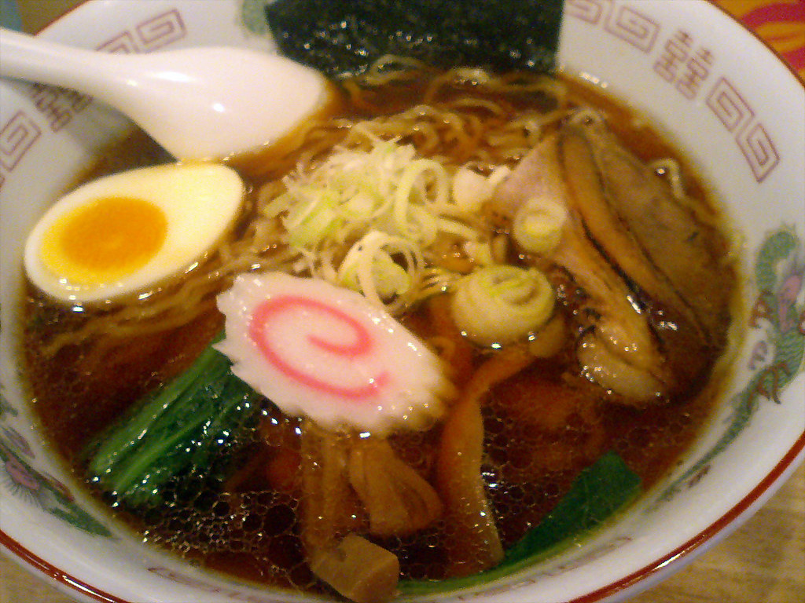

Ramen

Description
Ramen is a Japanese noodle soup dish featuring wheat noodles in a flavorful broth, often seasoned with soy sauce
or miso, and topped with various ingredients like pork, seaweed, and green onions. It's a customizable dish with
diverse regional variations and broth types, including Shoyu (soy sauce), Shio (salt), Miso, and Tonkotsu (pork
bone).
Ingredients
- 1 large egg
- 1 ½ teaspoons spicy sesame oil
- 2 (1x3-inch) boneless pork chop slices
- 2 tablespoons olive oil, divided
- 1 tablespoon black sesame seeds, divided
- 2 leaves fresh basil, chopped, divided
- 1 leaf fresh sage, chopped, divided
- 1 (3 ounce) package instant ramen noodles, seasoning packet discarded
- 3 tablespoons shredded dried kombu
- 1 ¾ tablespoons bonito soup stock
- 1 ¾ tablespoons soy sauce (shoyu)
- ½ teaspoon white miso paste with dashi
- 4 1/3-inch slices fish paste stick (naruto)
- 1 tablespoon tonkatsu sauce
- 1 tablespoon sushi ginger (shoga), finely chopped
- 1 green onion, thinly sliced
- 1 pinch ground black pepper
Steps
- Fill a small pot halfway with water. Bring to a boil; add egg and cook in boiling water for 15 minutes.
Drain. Run cold water over egg and set aside to cool.
- Pour sesame oil into a large skillet. Lay pork slices in oil. Cover pork with 1 tablespoon olive oil, 1/2
tablespoon sesame seeds, 1/2 of the basil, and 1/2 of the sage. Flip and cover pork with these remaining
ingredients: 1 tablespoon olive oil, 1/2 tablespoon sesame seeds, basil, and sage.
- Cook pork, covered, over medium-low heat, until evenly browned on the bottom, about 5 minutes. Flip and
continue cooking until second side is browned, about 5 minutes more. Remove from heat.
- Bring a large pot of water to a boil. Cook ramen noodles in boiling water until tender, about 3 minutes.
Drain in a colander set in the sink; rinse noodles until water runs clear. Return noodles to the pot.
- Stir kombu, bonito stock, soy sauce, and miso paste into noodles. Cook, stirring with chopsticks, over
medium heat, until miso paste is dissolved, 3 to 5 minutes. Transfer noodles to a serving bowl.
- Peel and cut egg in half lengthwise. Place egg, pork slices, and fish paste slices over noodles. Garnish
with tonkatsu sauce, ginger, green onion, and black pepper.
Home